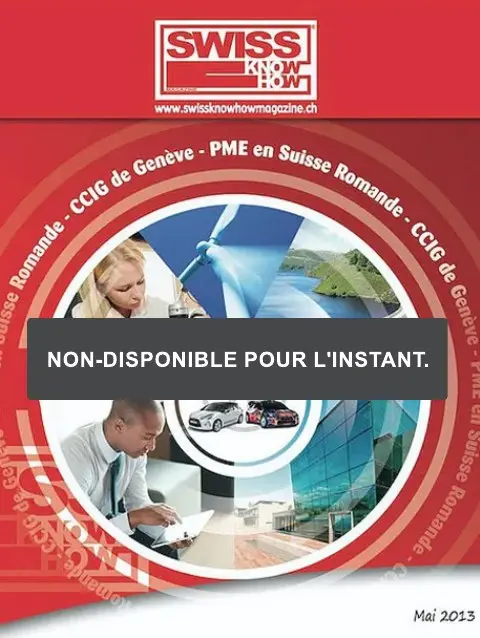

Économie régionale · 2013 · Genève, Suisse romande
Swiss Knowhow – CCIG de Genève, PME en Suisse romande (mai 2013)
Numéro de mai 2013 consacré à la Chambre de commerce, d'industrie et des services de Genève (CCIG) et aux PME de Suisse romande. Le fichier disponible ne contient que la couverture, barrée de la mention « Non disponible pour l'instant » : le contenu rédactionnel de l'édition n'est pas accessible.
PDF intégral disponible sur demande : info@comconsulting.ch
Entreprises de ce numéro · 1
Aucun résultat.